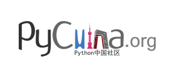
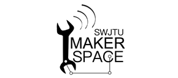

sponser


PyChina
PyChina创立于2014年，是由CpyUG(华蟒用户组)获得授权举办的中国PyCon年会，以推动各地Python线下活动和在线活动等为宗旨。
GeTui
GeTui (Zhejiang Merit Interactive Network Technology Co., Ltd.) is an independent provider of big data technology and artificial intelligence services, and is committed to driving industries forward through data intelligence. GeTui focuses on providing developer services, targeted mobile marketing, and big data applications in industries such as financial industry, smart tourism and public services.
Einplus
爱因互动专注于为企业提供售前领域的商用对话机器人，用友好、自然的人机沟通方式提升用户体验，促进销售转化。以 NLP、知识工程和个性化推荐技术为依托，我们深度结合行业相关知识和领域模型，为重点客户定制专属解决方案，提供高价值服务、降低销售和客服成本，提升达到销售转化率和用户满意度的目标。BXB
The vn.py open source community is one of the largest open source communities which focus on Python and Quantitative Trading in China. The community members mainly come from Financial and IT sectors including investment banks, hedge funds, financial brokers, data analysis firm and also other technology firms. Based on the vn.py open source quant trading framework, the community has contributed many ready-to-use open source projects for quantitative investment, algo trading and financial data analysis.
Nokia上海贝尔
诺基亚上海贝尔The school of Information Science & Technology (SIST) at Southwest Jiaotong University (SWJTU)
The school of Information Science & Technology (SIST) at Southwest Jiaotong University (SWJTU) has a history that was originated in 1960s, with the aim of meeting the trend of the times and the strategic demand of our country. At that time, SWJTU established three disciplines, i.e. computing technology, automation, and radio technology, becoming one of the earliest institutions in China which had electronics and information disciplines. In 1981, the discipline Computer and Its Applications was authorized as one of the first disciplines in China being able to award master degree, when there was only two in Sichuan Province. The department Computer Science and Engineering was founded in 1981, which was followed by the establishment of the School of Computer and Communications Engineering (SCCE) in 1993 (the predecessor of SIST). In 2005, the school was renamed SIST. With the solid construction and rapid development over 50 years, SIST has built a balanced and well developed disciplinary system, covering the whole area of Electronics and Information. With primary disciplines including Computer, Communications, Control and Electronics, SIST has become a base for producing IT talents and carrying out outstanding scientific research.

Innovation Center for China-U.S. Youth Exchange of Southwest Jiaotong University
Southwest Jiaotong University Makerspace (SWTJU Makerspace) was founded in December 2013 to create a making space for college students to provide support for innovation and entrepreneurship. Now the space is a sub-center of SWJTU, linked to the Engineering Training Center, is China''s first three makerspace founded by university.ThoughtWorks
ThoughtWorks was founded in 1993 in Chicago. There are 41 offices and more than 5,000 outstanding talents in 14 countries. A community of passionate individuals whose purpose is to revolutionize software design, creation and delivery, while advocating for positive social change.Turing Education
Beijing Turing Culture Development Co., Ltd. has always been planning and publishing high-quality science and technology books as its core business. Since its establishment, it has accumulated more than 10 million books, affecting millions of readers. Its Turing education brand is one of the high-end brands in the domestic computer book field. The Turing Community is a comprehensive service platform created by Turing, which combines the production of book content, the service of translators, the sales of e-books, and the exchange of technical people.
BroadView
The 15-year-old Chinese-language IT book flagship brand is known as the miracle of Internet speed development in the traditional paper media publishing industry! Publishing philosophy deep cultivation of professional publishing, technology leading innovation. Over the years, it has continued to maintain strong growth, and the compound growth rate is considered to be the industry leader. The annual direct impact on the technical career of 10 million + professionals.Asynchronous Community
The Asynchronous Community (www.epubit.com) is a leading IT professional book community in China. It is hosted by the People's Posts and Telecommunications Publishing House and is dedicated to the publication and sharing of quality learning content, providing readers with quality learning content and online communication for readers and authors.
华章科技
北京华章图文信息有限公司（机械工业出版社华章公司）成立于1995年，是国内第一家中外合资的出版公司。20多年来出版了《算法导论》、《编译原理》、《Java编程思想》、《深入理解计算机系统》、《点石成金：访客至上的网页设计秘笈》、等知名畅销书，累计出版图书3000多种，图书销售册数超过2000万册。
CC视频
CC视频成立于2005年4月，是面向垂直行业用户打造的一站式场景化视频解决方案的服务品牌。CC视频提供基于云计算的视频云直播、云点播、云互动和云加速的整体解决方案，满足教育、金融、IT互联网、医疗、政府企业等行业用户的在线视频应用需求。CC视频连续7年在在线教育领域占有率达72%，续签服务的用户占比达84.6%。
OTPUB
OTPUB领先IT技术在线学习&直播平台，元鼎旗下全资子公司（北京奥泰帕博科技有限公司），是国内首家与厂商直接合作的技术企业，从而获得最先进、最实用的技术资源，成为最权威的IT技术在线学习&直播平台。平台汇集各厂商及高级工程师共同制作的IT技术视频课程，与互联网最前沿与热门直播活动，以满足企业及个人在产品知识、技术应用、案例分析、产品超融合等领域的技能提升。
Accuvally
Accuvally is an activity platform that is trusted by the organizers and loved by urban white-collar workers. It is also the industry's leading event technology service provider; it provides event venue reservations, event release, One-stop comprehensive event service, such as registration promotion, check-in ticket inspection, activity data analysis, custom assembly APP/small program, event service provider docking, etc.Juejin
Juejin.im – Becoming a better developer by sharing and learning. We provide premium and customized content covering all technical categories to our users through data mining. We boost the adoption of new technology. Juejin has already become the most popular online community for developers in China. You can visit our website or download our mobile app. Juejin is also available as a browser extension. Our key products include Juejin Book, Juejin Translation Project, etc.Asynchronous Community
The Asynchronous Community (www.epubit.com) is a leading IT professional book community in China. It is hosted by the People's Posts and Telecommunications Publishing House and is dedicated to the publication and sharing of quality learning content, providing readers with quality learning content and online communication for readers and authors.GitChat
GitChat brings together the industry's top technology experts, is the technology elite knowledge sharing community and learning platform, to create a new concept of "reading + communication = knowledge + social" to meet the changing needs of IT practitioners in knowledge learning, change the way of knowledge learning.
Open Source China
Open Source China (OSC) founded in August 2008 is the largest open source community in China. It has more than 2.3 million registered members and Alexa ranking 1400 in the world. OSC provides multiple channels including news, forum, code sharing, blogs, and translation, etc to help local developers study and utilize open soure technology.
DBAPlus
dbaplus：数据连接未来！围绕Data、Blockchain、AiOps的企业级专业社群。行业大咖、技术干货，每天精品原创文章推送，每周线上技术分享，每月线下技术沙龙，受众20W+。
Qianfeng Education
Qianfeng Education belongs to Beijing Qianfeng Interconnection Technology Co., Ltd. It was founded in January 2011. Its headquarters is located in Beijing. At present, it has established branches in 15 cities, such as Shanghai, Shenzhen, Guangzhou and Hangzhou. Since its inception, Qianfeng has trained tens of thousands of technical personnel in Python, artificial intelligence, big data, Java, HTML5 and other fields, and has established cooperation with 10,000 IT-related enterprises in talent delivery, and is committed to building a talent service platform in the IT education industry chain.
知晓云
知晓云是国内首家专注于微信小程序开发的后端云服务，为小程序开发者提供最低门槛的 Serverless 无服务架构接入体验。它免去了小程序开发中服务器搭建、域名备案、数据接口开发、线aoxig上运维等繁琐流程，通过 BaaS（Backend As A Service）、FaaS（Function As A Service）组合而成的服务矩阵，让开发者专注于业务逻辑的实现，快速上线小程序。
创客猫
创客猫是活跃在创新创业第一现场的新媒体。专注为全国范围内的创新创业活动提供图文直播、现场报道、专访等服务，为创业者和产业创新者提供各行业最前沿的资讯动态。截止目前，每月邀请创客猫进行图文直播和报道的峰会已近百场，创客猫也累计专访报道了数百名创业者和知名投资人。Mockplus
Mockplus is an all-in-one tool for designers and developers to prototype mobile, web and desktop apps quickly and easily. It's developed and well-maintained by Jongde Software LLC, a fast-growing start-up on a mission to improve the user experience of prototyping magic.